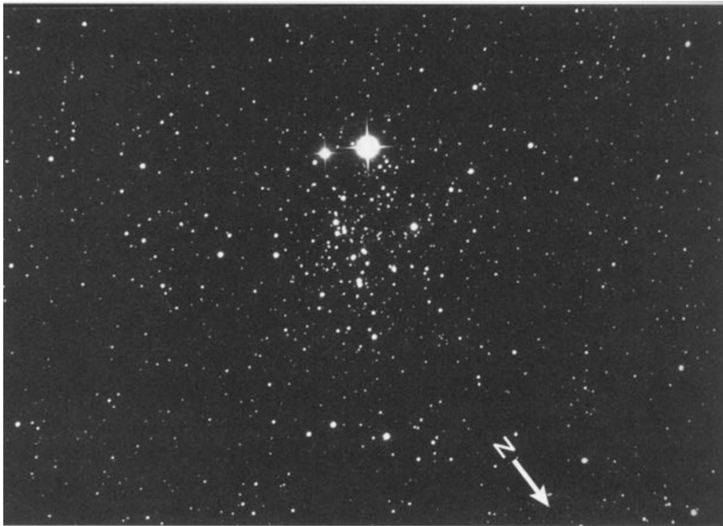

E.T.星团 · E. T. Cluster (NGC 457)
Of the dozens of open clusters in Cassiopeia, none inspires as many visual flights of fancy as NGC 457. Christian Luginbuhl and Brian Skiff rate it as "perhaps the most impressive of all the clusters in Cassiopeia," and Sky & Telescope's Alan M. MacRobert calls it "one of my favorites in the whole sky."
在仙后座数十个疏散星团中，NGC 457 最能激发观星者的瑰丽想象。克里斯蒂安·卢金布尔与布莱恩·斯基夫将其誉为"或许是仙后座所有星团中最令人叹为观止的"，而《天空与望远镜》杂志的艾伦·M·麦克罗伯特则称其为"我全天最钟爱的天体之一"。
"This is one of those clusters that especially provoke the human tendency to see animals, faces, and monsters in random patterns."
"这类星团特别能激发人类将随机图案联想为动物、面孔或怪物的天性。"——艾伦·麦克罗伯特
Certainly NGC 457 is fast becoming one of the most popular showpieces at amateur gatherings. In photographs this roughly T-shaped pack of glittering suns looks like the stick figure of a man ready to greet you.
毫无疑问，NGC 457 正迅速成为业余天文爱好者聚会上最受欢迎的展示目标之一。在摄影图像中，这个近似 T 字形的璀璨星群宛若向你致意的火柴人。
Two prominent stars at the cluster's southeastern end mark the figure's gaping eyes; two chains of stars on the northeastern and southwestern sides of the cluster's tapered body extend outward like wide-open arms; and two isolated suns at the cluster's northwestern end mark the figure's comfortably spaced feet.
星团东南端两颗亮星构成人形瞪大的双眼；东北与西南两侧的星链则勾勒出锥形身躯向外延伸如同张开的双臂；而位于星团西北端的两颗孤星则标记着它舒适分开的双足。

The cluster looks like it is not only happy to see you but wants to give you a hug.
整个星团看起来不仅欣喜于见到你，更想给你一个拥抱。
Shining at magnitude 6.4, NGC 457 is Cassiopeia's third-brightest open cluster, following magnitude-4.4 Stock 2 and Stock 5, whose brightest star is magnitude 4.9. Yet despite its prominence, NGC 457 is yet another one of those visual gems that tends to be lost in the shadow of fame surrounding a nearby Messier object—in this case, M103.
其亮度为 6.4 等的 NGC 457 是仙后座第三明亮的疏散星团。然而尽管如此显著，它却如同许多视觉珍宝般，被邻近梅西耶天体 M103 的盛名所掩盖。
Both M103 and NGC 457 are in the Milky Way's Perseus Arm and can be found near Delta (δ) Cassiopeiae. M103 lies less than 1° northeast of Delta Cassiopeiae, while NGC 457 is 2° to the southwest.
M103 与 NGC 457 均位于银河系的英仙臂，皆可在仙后座 δ 星附近寻得——M103 位于仙后座 δ 东北方不足 1° 处，而 NGC 457 则在其西南方约 2° 方位。
关键参数 · Key Parameters
| 参数 / Parameter | 数值 / Value |
|---|---|
| NGC 编号 | NGC 457 |
| 类型 / Type | 疏散星团 / Open Cluster |
| 星座 / Constellation | 仙后座 / Cassiopeia |
| 赤经 / RA | 01h 19.5m |
| 赤纬 / Dec | +58° 17' |
| 视星等 / Magnitude | 6.4 |
| 视直径 / Apparent Diameter | 20' |
| 发现者 / Discoverer | 威廉·赫歇尔 / William Herschel (1787) |
历史发现 · Historical Discovery
[Observed 18 October 1787] A brilliant cluster of [bright] and very [faint] stars, considerably rich.
"1787年10月18日观测：一个由明亮与暗弱恒星组成的璀璨星团，相当密集。"——威廉·赫歇尔
William Herschel first logged this cluster on October 18, 1787, describing it as "A brilliant cluster of bright and very faint stars, considerably rich." His elegant prose captures the essence of what modern astronomers still appreciate—a glittering assembly where stars of varying brightness create a sense of depth and wonder.
1787年10月18日，威廉·赫歇尔首次记录了这个星团，将其描述为"一个由明亮与暗弱恒星组成的璀璨星团，相当密集"。他那优雅的记述捕捉到了现代天文爱好者至今仍赞叹不已的精髓——一个由不同亮度恒星构成的璀璨阵列，营造出深邃而奇妙的视觉层次。
观测体验 · Observing Experience
When you first swing your telescope toward NGC 457 on a clear autumn night, the dark sky suddenly erupts with two brilliant sapphire sparks suspended against the velvet darkness—these are the cluster's "eyes," magnitudes 5 and 7, that pierce through the surrounding stellar haze like beacons of another world. Around these luminous eyes, a delicate spray of stars unfolds in an unmistakable silhouette: the unmistakable form of E.T. himself, reaching out with outstretched arms as if to make contact across the cosmic void.
当你在清朗的秋夜首次将望远镜对准 NGC 457 时，黑暗的夜空骤然爆发——两颗璀璨的蓝宝石般火芒悬浮于丝绒般的黑暗之中，那正是星团的"双眼"，分别为5等和7等，如同另一个世界的灯塔般穿透周围星雾。在这对光芒之眼的周围，一簇精致的星点徐徐展开，勾勒出一个无可辨认的轮廓：正是 E.T. 本人，伸展着双臂，仿佛要与这宇宙虚空另一端的你建立联系。
Through an 8-inch Schmidt-Cassegrain at moderate magnification, the scene becomes almost unsettling in its anthropomorphic clarity. The two "eye" stars blaze with an almost defiant intensity, while the fainter surrounding suns trace the curves of a small figure with arms flung wide in greeting. The space between the stars seems to shimmer with potential energy, as if at any moment the tiny figure might step forward out of the cosmic canvas and into your waiting hands.
透过 8 英寸施密特-卡塞格林式望远镜以中等倍率观测，眼前景象几乎令人不安地呈现出逼真的人形。那两颗"眼"星以近乎挑衅般的强度闪耀，而周围较暗的星点则描绘出一个小小人形张开的双臂。更远处的星链则延伸为巨大的臂膀，在宇宙的画布上勾勒出这个来自遥远星空的小家伙正向你招手的身影...
（待续...未解之谜：这两颗最亮的"眼"星究竟与星团本身有怎样的联系？它们是真正的成员星，还是仅仅是恰好位于视线方向上的前景恒星？）
🔒 受限于篇幅，本文仅展示部分样章。O'Meara 先生完整的观测手记、实测数据及未公开的独家配图，请参阅原著双语典藏版。
👉 立即在闲鱼获取《DEEP-SKY COMPANIONS》中英双语高清典藏版